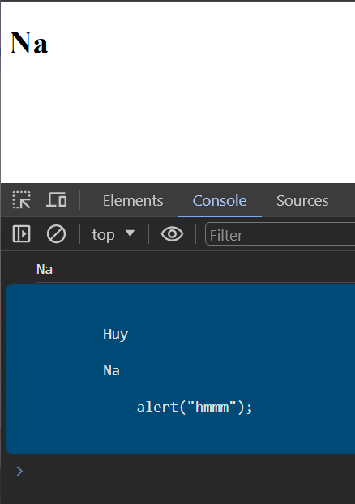

HTML DOM
HTML DOM không phải của JS mà nó là 1 quy chuẩn đc W3C định ra, JS có các method, cách thức để có thể tương tác, tuy cập vào cáu trúc của HTML DOM

Basic Concept
DOM - Document Object Model
DOM được browser tạo ra khi website được load. Browser có html source code sẽ dựa trên quy chuẩn W3C được cài đặt sẵn => tạo ra DOM
Gồm 3 thành phần
- Element
- Attribute
- Text
Get element methods
Element
/*--------------------------------------*/
// ID return thẳng luôn đối tượng đó
let HeadingNode = document.getElementById('heading');
console.log(HeadingNode)
/*--------------------------------------*/
// class return mảng chứa nhiều elements bên trong
let HeadingNodes = document.getElementsByClassName('heading');
console.log(HeadingNodes)
/*--------------------------------------*/
// tag name return mảng chứa nhiều elements bên trong
let HeadingNodes = document.getElementsByTagName('p');
console.log(HeadingNodes)
/*--------------------------------------*/
// CSS selector return thẳng 1 thằng
let HeadingNode = document.querySelector('.head .heading-2');
console.log(HeadingNode)
// CCS như nào thì ở đây tương tự -- ở đây chỉ select thằng đầu tiên
// Nếu dùng querySelectorAll thì nó return về 1 list các elements thỏa mãn
/*--------------------------------------*/
// HTML collection
// a(anchors) / form / img(images)
console.log(document.forms)
console.log(document.forms['form-1'])
console.log(document.forms.form_1)
Attribute
let HeadingELemnt = document.querySelector('h2');
HeadingELemnt.title = "haizzz"; //title
HeadingELemnt.id = "haizzz"; //id
HeadingELemnt.className = "haizzz"; //class
// set attribute và value mới cho 1 element
HeadingELemnt.setAttribute('huyna', 'haha');
console.log(HeadingELemnt.getAttribute('id')); //haizz
console.log(HeadingELemnt.getAttribute('huyna')); //haha
// chỉ hợp lệ với các attribute hợp lệ, chứ huyna là cái mình tự set, k dùng kiểu syntax này được
console.log(HeadingELemnt.id); //haizz
Text
let HeadingELemnt = document.querySelector('.heading');
// HeadingELemnt.innerText = "abc";
// HeadingELemnt.textContent = "xyz"; //same
console.log(HeadingELemnt.innerText); // in ra những gì nhìn thấy
console.log(HeadingELemnt.textContent); // in ra những text thật sự chứa (bỏ qua các tag, chỉ lấy text bên trong tag)

InnerHTML Property
let boxElement = document.querySelector('.box');
// boxElement.innerHTML = "<h1>haha h2</h1>"; // thêm vòa bên trong element
boxElement.outerHTML = "<h1>haha h2</h1>"; // ghi đè luôn thằng cha đã thêm nó
DOM event
Ví dụ cơ bản: for more
let boxElement = document.querySelector('.box');
boxElement.onclick = function () {
console.log("123")
}
<body>
<input type="text" class="">
<input type="checkbox" name="" id="">
<select name="" id="">
<option value="1">JS</option>
<option value="2">PHP</option>
<option value="3">Python</option>
</select>
</body>
let inputElement = document.querySelector('input[type="text"]');
// cần có sự thay đổi tức là focus vào nhập rồi focus ra ngoài
inputElement.onchange = function (e) { // có thể dùng oninput ...
console.log(e.target.value)
}
/*---------------------------------------*/
let inputElement = document.querySelector('input[type="checkbox"]');
inputElement.onchange = function (e) {
console.log(e.target.checked) // return true/false
}
/*---------------------------------------*/
let inputElement = document.querySelector('select');
inputElement.onchange = function (e) {
console.log(e.target.value) // return 1/2/3 (value set in option)
}
/*---------------------------------------*/
// preventDefault: giúp loại bỏ hành vi mặc định của browser trên thẻ html
//
// <a href="https://facebook.com" class="">facebook</a>
// <br>
// <a href="https://google.com" class="">goole</a>
//
let aElement = document.links;
for (let i = 0; i < aElement.length; i++) {
aElement[i].onclick = function (e) {
if (!e.target.href.startsWith('https://face')) {
e.preventDefault();
}
}
}
/*---------------------------------------*/
// stopPropagation: giúp loại bỏ sự kiện nổi bọt, event bị trigger từ con => cha => ông ....
// <div>
// DIV
// <button>Click me</button>
// </div>
document.querySelector('div').onclick =
function () {
console.log('DIV');
}
document.querySelector('button').onclick =
function (e) {
e.stopPropagation();
console.log('button');
}
Event listener
let btn = document.getElementById('btn');
/**
* dùng dom event chỉ muốn catch event và thực hiện trong 3s
* sẽ bị ghi đè
*/
// btn.onclick = function () {
// console.log('viec 1');
// console.log('viec 2');
// console.log('viec 3');
// }
// setTimeout(function () {
// btn.onclick = function () { }
// }, 3000);
/**
* Không bị ghi đè
* tuy nhiên cần để function ở bên ngoài để
* tạo và xóa dễ dàng hơn
* cung cấp phương thức remove dễ dàng
*/
function viec1() {
console.log('viec 11');
}
btn.addEventListener('click', viec1);
btn.addEventListener('click', function () {
console.log('viec 22');
});
btn.addEventListener('click', function () {
console.log('viec 33');
});
setTimeout(function () {
btn.removeEventListener('click', viec1)
}, 3000);